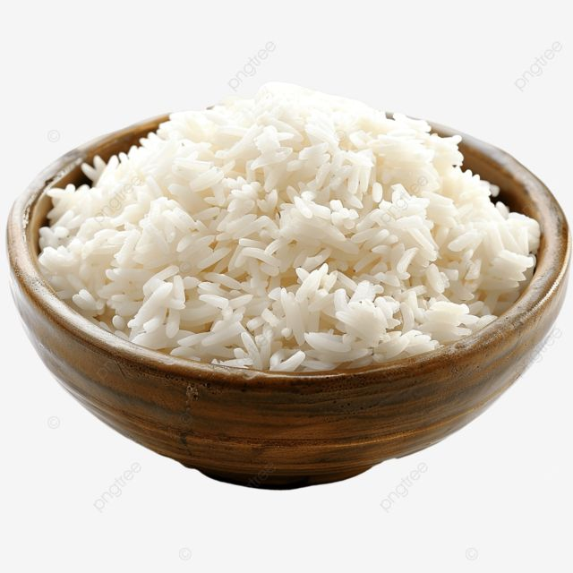
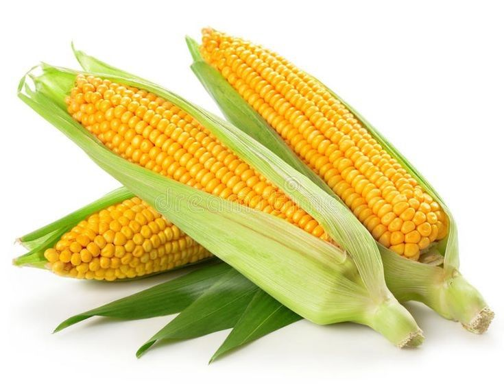
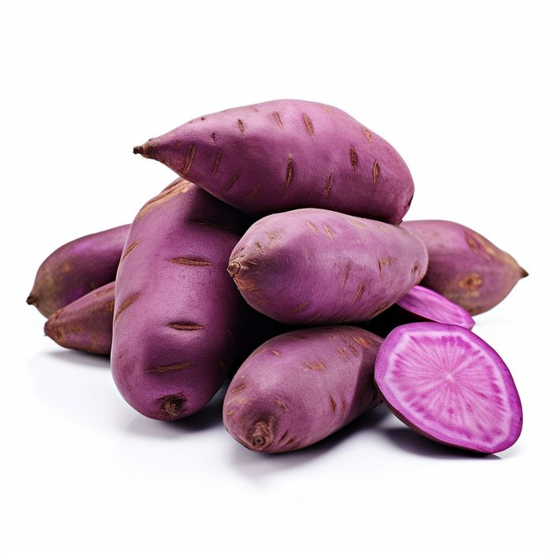
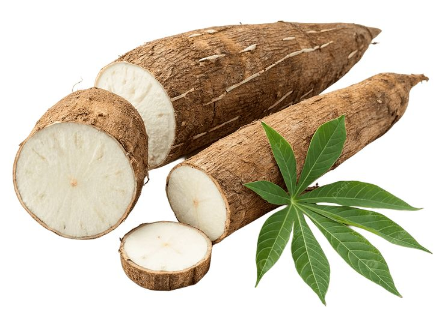
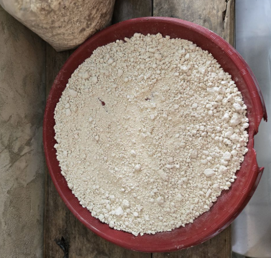

01
Nasi
Berbahan dasar beras dan menjadi makanan pokok yang paling banyak dikonsumsi di Indonesia.

Makanan pokok adalah makanan utama yang dikonsumsi sehari-hari untuk memenuhi kebutuhan energi tubuh.
Berbahan dasar beras dan menjadi makanan pokok yang paling banyak dikonsumsi di Indonesia.

Sumber karbohidrat yang banyak dimanfaatkan sebagai makanan pokok di beberapa daerah.

Mengandung karbohidrat dan dapat diolah menjadi berbagai makanan tradisional.

Mudah ditemukan dan dapat diolah menjadi berbagai makanan yang lezat dan bergizi.

Menjadi salah satu makanan pokok masyarakat di beberapa wilayah Indonesia bagian timur.
Setiap daerah di Indonesia memiliki pangan pokok yang berbeda. Perbedaan ini dipengaruhi oleh kondisi alam, hasil pertanian, dan kebudayaan masyarakat setempat.
Keberagaman pangan membuat Indonesia memiliki kekayaan kuliner yang sangat beragam.
Kenali dan hargai makanan pokok dari berbagai daerah Indonesia.
Pangan lokal adalah bagian dari kekayaan Indonesia.